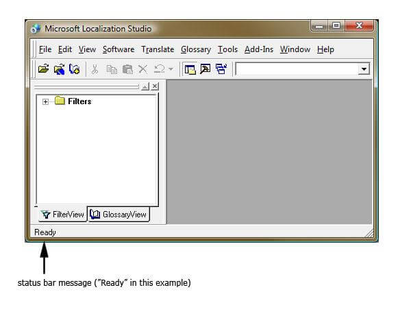

Styleguide Africaans (af)
Introduction
This style guide is intended for translators working on Mozilla projects. It provides in-depth information about the quality standards expected by Mozilla for the translation of all product components. All translators should read this guide before commencing any translation work.
This guide addresses general translation issues and specifies certain rules of style and usage specific to your language. It should be used as a guideline to avoid common typographic errors, and to maintain consistent terminology and writing style across a project’s components and indeed a product range. The guide should be used in conjunction with the current and previous product-specific glossaries, glossaries of other products of a product range, and the industry standard platform-specific glossaries, such as those provided by Mozilla.
This document may be updated or completed in the course of translation. Where no specific instruction or recommendation is specified, translators should use the phrasing and style that comply with industry standards.
General Style Considerations
Style guidelines
Follow these basic rules:
- Original American English text tends to be rather casual. For Afrikaans, use a neutral style, with the informal form of address.
- Try to avoid long, nested sentence constructions. If necessary, break up the original sentence and regroup it syntactically.
- Use wording that is brief and unambiguous.
- Use a consistent style throughout all product components and across a product range, to ensure that all Mozilla products can be linguistically identified as part of a group of products.
Style guidelines specific to Mozilla products
- Please refer to the reference documentation supplied by Mozilla and any Mozilla style guides and make a note of anything significant and specific that should be noted with respect to Mozilla.
- Please ensure to use a recently published dictionary (recommended source: Pharos 5-1 CD-ROM / Pharos Online list of technical dictionaries).
- Before returning any files, please be sure to run a recent Afrikaans spellchecker (in case of disagreements, the HAT spelling will be followed).
Reference terminology
The following terminology sources should be used as reference in the translation:
- Product-specific glossary, to ensure consistency across all product components.
- Previous version product-specific glossary, to ensure consistency between versions.
- Glossaries of other Mozilla products, to ensure cross-product consistency.
- Microsoft glossaries, to ensure adherence to some of the industry standards. The glossaries can be found at: http://www.microsoft.com/language/en/us/search.mspx.
Terminology not found in the glossary or style guide
- Please make a log of any terms not found in the glossary or style guide that are used frequently in the materials. Return this log to Rubric so that the terms can be incorporated into the glossary. This increases consistency in large projects.
Abbreviations
General Abbreviations
- Avoid the use of non-standard abbreviations. Where no appropriate abbreviation exists, rather use the whole word.
- Where there are space restrictions in the UI, abbreviations can be used. These must be entered into the glossary with the full translation, and should be approved by the customer.
- This matter is dealt with in detail and is cross-referenced in AWS10 under 3.14, 3.20, 7.1, 7.2, 12.8–12.12, 14.5 and 14.9–14.12. These rules should be followed closely.
- The compounds below contain either an abbreviation or a numeral followed by a component name. The abbreviation or numeral is marked in red in the English example. The Afrikaans example below show how such constructions should be translated.
| English example | Afrikaans example |
|---|---|
| CD-ROM drive | CD-ROM-aandrywer |
| 2-D gridlines | 2D roosterlyne (See AWS10, 3.14(e)) |
| 24 bit color value | 24-bis-kleurwaarde |
| 3.5 Floppy | 3.5-disket |
| 51/4-inch Floppy | 5¼-duim-disket |
| 35mm slides | 35 mm-skyfies |
Note the difference between the styling of “5¼-duim-disket” and “35 mm-skyfies”, which results from the fact that "mm" is regarded a symbol and not an abbreviation. South Africa, and therefore Afrikaans, officially use the metric (SI) system, which requires as space between a figure and the accompanying symbol – see AWS10, 7.10–7.17.
Measurements and Numerals
In addition to common measurements such as km, m, cm, mm, etc., the following abbreviations are used in technical documentation:
| Measurement | Abbreviation | Comment/Example |
|---|---|---|
| Gigagreep | GB | Do not use Gbyte |
| Kilogreep | KB | Do not use Kbyte |
| Megagreep | MB | Do not use Mbyte |
Important: The old rule that all numerals up to 12 must be spelled out is no longer valid. Use your best judgment given the at hand, especially when a combination of numbers is involved.
Example: Twee 1-GB-hardeskywe.
Filename Extensions
- Filename extensions and graphic formats referenced by filename extensions such as BMP, GIF, HTML, PNG, TIFF must not be translated.
Acronyms
Acronyms are made up of the initial letters of several words that are represented by these letters. Some well-known examples are WYSIWYG (What You See Is What You Get), OLE (Object Linking and Embedding), or RAM (Random Access Memory).
If an acronymn has an official or commonly recognised translation in Afrikaans (e.g. if it is present in a general dictionary), use the Afrikaans acronymn. Otherwise, use the English acronymn. If the acronymn is followed in English by a full form, retain the acronymn in English and translate the full form into Afrikaans.
IMPORTANT: Do not translate an abbreviation or acronym that is a trademark, unless it is the official translation of that trademark.
Use recognised translations of acronyms where these exist, but avoid creating new, non-standard acronyms.
**Examples:**
Data Access Objects (DAO) = Datatoegangsvoorwerpe (DAO)
ActiveX data objects (ADO) = ActiveX-datavoorwerpe (ADO)
Articles
Product Names
Mozilla product names are used without definite or indefinite articles. Product names and non-translated feature names are considered proper nouns and are used without definite or indefinite articles in English.
Note that the product and feature names are regarded as proper nouns. When these form part of a compound noun in Afrikaans, the preferred style is to hyphenate and not to write the common-noun part of the compound separately, e.g. (+) Windows Mail-kieslys, (+) Internet Explorer-opsies. No hyphens should be inserted between parts of the product and feature names when that proper noun forms part of an Afrikaans compound noun, e.g. () Windows-Mail-kieslys, (-) Internet-Explorer-opsies. See in particular AWS10, rules 14.6 (including pp. 118 & 119) to 14.12.
| English example | Afrikaans example |
|---|---|
Windows Mail shares your Internet Connection settings with Internet Explorer |
(+) Windows Mail deel jou internetverbinding-instellings met Internet Explorer |
Website addresses will be sent to Microsoft |
(+) Webwerfadresse sal aan Microsoft gestuur word |
By contrast, translated feature names are used with a definite or indefinite article as they are not treated as proper names.
| English example | Afrikaans example |
|---|---|
Hide the Task Manager when it is minimized |
(+) Versteek die taakbestuurder wanneer dit geminimeer word |
Check for updates in your installed Media Player's language |
(+) Kyk of daar bywerkings in die taal van jou geïnstalleerde mediaspeler is |
Copyrights and Trademarks
Product names should not be translated unless the client requests it. |
Copyright protection is granted to any original work of authorship fixed in any tangible medium of expression from which it can be perceived, reproduced, or communicated.
| English text | Afrikaans translation |
|---|---|
| Copyright | (+) Kopiereg |
| All rights reserved | (+) Alle regte voorbehou |
Translation of Version Strings
- Please use the following guidelines when localizing version strings:
- Version strings that contain copyright information should always be translated.
- (Example: Kopiereg © 2005 xyz. Alle regte voorbehou.)
- In version strings containing feature names that are trademarked, the feature names that are trademarked should not be translated.
Gender-neutral Translation
In cases where a noun that denotes a male person or animal has a counterpart that denotes the female by means of a suffix, use the male form, unless the male form normally indicates to Afrikaans readers that female is excluded.
Instead of stressing gender differences or reinforcing stereotypical distinctions between men and women, use language that is as neutral as possible. The neutral approach also applies to the localization of scenarios, comparisons, examples, illustrations, and metaphors.
When assigning roles and functions to men and women (active vs. passive roles, leading vs. secondary roles, technical vs. non-technical professions, and so on), follow the English source text. Scenarios, pictures, metaphors, and comparisons should be based on areas and attributes common to both genders.
Instead of using phrases which mention the two genders separately, use a general term that includes both genders such as “mense”, “gebruikers” or “persone”.
Avoid writing sentences that refer to a single person whose gender is unknown. You can often avoid this situation by rewriting the sentence to make the subject plural. In cases where a reference to a single person is impossible to avoid, use “hy/sy”, “sy/haar” or “hom/haar”. The language in Mozilla products should, however, sound natural, as if part of a spoken conversation.
Use the following strategies to avoid the use of overtly gender-biased expressions:
| Linguistic method | Example | Context |
|---|---|---|
| Use a neutral noun | persoon, leier, spanleier, deskundige, werknemer, gebruiker | Concept descriptions, explanations |
| Combine both genders by means of a slash | hy/sy, sy/haar, hom/haar | Everywhere |
Special Afrikaans notes:
- For Mozilla translations, it is NOT acceptable in Afrikaans to use a plural pronoun if the antecedent is singular, e.g. “Die gebruiker moet hulle vergewis van die inhoud van die lisensiekontrak” is not acceptable, even though this is increasingly done in English. (The only exception to this rule may occur when the antecedent is nominally singular but notionally plural, e.g. some collective nouns.) Therefore, the use of a plural pronoun with a singular antecedent is not an acceptable way of avoiding gender-specific language.
- Afrikaans uses the masculine pronoun (hy/sy/hom) to refer to non-human objects, and not the non-personal (neuter) pronoun dit, e.g.
- (+) Die rekenaar werk nie want sy hardeskyf is stukkend. (The PC doesn’t work because its hard disk is broken)
- (+) Die motor kan nie ry nie want hy het nie ’n battery nie.(The car won’t go because it doesn’t have a battery.)
- (+) Die hond het vir hom ’n skaduplekkie gesoek. (The dog found itself a patch of shade.)
The non-personal pronoun “dit” can be used, of course, but mostly as sentence or clause subject or object.
In cases where a noun that denotes a male person or animal has a counterpart that denotes the female by means of a suffix, use the male form, unless the male form normally indicates to Afrikaans readers that female is excluded, or restructure the text to avoid any overt mentioning of gender on the noun.
- A custom dictionary can only be used by the
userwho created it.- (+) ’n Pasgemaakte woordeboek kan slegs gebruik word deur die
gebruikerwat dit geskep het.
- (+) ’n Pasgemaakte woordeboek kan slegs gebruik word deur die
- A custom dictionary can only be used by the
personwho created it.- (+) ’n Pasgemaakte woordeboek kan slegs gebruik word deur die
persoonwat dit geskep het.
- (+) ’n Pasgemaakte woordeboek kan slegs gebruik word deur die
All userswho use this feature.- (+)
Alle gebruikerswat hierdie stelsel gebruik.
- (+)
Allwho use this feature.- (+)
Almalwat hierdie stelsel gebruik.
- (+)
- Even if you
are not a statistician, Microsoft Excel offers you...- (+) Selfs al
is jy nie ’n statistiekkenner nie, kan Microsoft Excel jou help om ...
- (+) Selfs al
- Even if you
understand little about statistics, Microsoft Excel offers you...- (+) Selfs al
verstaan jy nie veel van statistiek nie, kan Microsoft Excel jou help om ...
- (+) Selfs al
- Some of the best snapshots could be made because
the photographer...- (+) ’n Mens kry soms die beste foto’s omdat
die fotograaf...
- (+) ’n Mens kry soms die beste foto’s omdat
- Some of the best snapshots could be made because
the person who took the photo...- (+) ’n Mens kry soms die beste foto’s omdat
die persoon wat die foto’s geneem het, ...
- (+) ’n Mens kry soms die beste foto’s omdat
- If
you havefun, your friends and relatives will be...- (?) As
jy pret het, sal jou vriende en familie...
- (?) As
- If
one is havingfun, friends and relatives will be...- (+) As ’n mens iets geniet, sal vriende en familie.
- Create an appealing and secure shopping environment for your
customers.- (+) Skep ’n aangename en veilige koopomgewing vir jou
klante.
- (+) Skep ’n aangename en veilige koopomgewing vir jou
- Create an appealing and secure shopping environment for your
clientele.- (?) Skep ’n aangename en veilige koopomgewing vir jou
kliënte.
- (?) Skep ’n aangename en veilige koopomgewing vir jou
Genitive
The relative pronoun “who” is translated as “wat” [= ‘that, which’] irrespective of whether its antecedent is human or non-human, except when the relative pronoun is accompanied by a preposition or the particle “se” (the possessive particle), in which case “wie” [= ‘who, whose’] is used, e.g.
- (+) Die program wat gebruik word, is verouderd. (The program that is used is obsolete.)
- (+) Iemand wat die lisensievoorwaardes oortree, sal… (Someone who does not comply with …)
- (+) ’n Gebruiker wat sukkel, kan die hulplyn gebruik. (A user experiencing problems may use the help line.)
- (+) ’n Gebruiker wie se rekenaar te klein is, gaan sukkel. (A user whose PC is too small …)
- (+) Die mense na wie jy soek, is … (The people you’re looking for are …)
Localized term vs. English term
The most common language of terminology in the computer world is English. However, it is quite unnatural in Afrikaans to use English words in an Afrikaans sentence (except for product names and acronyms). Resist the temptation to borrow an English word as-is. Find out what the word means, and create a term that a reasonably intelligent Afrikaans reader will understand.
Gender
Many terms in circulation in the high tech industry have been adopted from English. They must follow Afrikaans grammar and syntax rules.
Inflections
The examples below show how English loanwords inflect for number in Afrikaans.
| English example | Afrikaans example + plural |
|---|---|
| CD | CD – CD’s |
| CD-ROM | CD-ROM – CD-ROM’e of CD-ROM’s |
| HTML | HTML – HTML’e |
| HTTP | HTTP – HTTP’s |
| SIM | SIM – SIM’s |
Verbs and Verb Forms
Do not use an English verb as loan word in Afrikaans.
Headings
Headings should convey as much information as possible about the ensuing text to help readers locate information quickly. If in English the heading begins with a gerund, use the nominalized verb (without article) whenever possible.
Capitalization
In English headings, all nouns, pronouns, adjectives, verbs, adverbs, and subordinate conjunctions (such as “that,” “until,” and “which”) are capitalized. Please do not apply the same principle to Afrikaans headings. Instead, follow the normal Afrikaans capitalization rules. The same rule applies to software strings.
Normal syntactical capitalization should be used in Afrikaans, bearing in mind that buttons, tags, etc. should be clearly identifiable as such “Klik op Hulp” or “Gaan na die Tuis-strook”. The use of capital letters is dealt with in Chapter 9 of AWS10. If a heading or label uses multiple words and is not in a different format, enclose it in double quotes in Afrikaans.
| English example | Afrikaans example |
|---|---|
| Click Help to proceed | Klik Hulp om voort te gaan |
| Click Help Me Choose to proceed | Klik "Help my besluit" om voort te gaan |
| Switching Between Windows | (+) Spring tussen vensters |
In Lists and Tables
Whenever possible, headings of lists and tables should consist of one or two words, preferably active nouns. They should be concise, even if the source uses a longer phrase.
In English, lists may be headed in two ways, namely (a) an introductory phrase that is completed syntactically by every item in the list and (b) an “independent” introductory phrase followed by syntactically independent items.
In English, the syntax of the items are typically not affected by the phrasing of the introductory phrase, if it is one sentence. However, in Afrikaans, the word order of the introductory phrase can affect the word order of the individual items. When translating the introductory phrase, try to translate it in such a way that the items can be translated as an independent phrases.
Either way, care should be taken to ensure that every individual item is not an incorrect syntactical completion of the heading and makes sense in terms of meaning (semantics) and subject matter. Note that the position of the (main) verb may require a structure that differs significantly from the English.
(In the examples below, “How to use” would require the infinitive form of the verb in Afrikaans, which requires the object to be placed before the main verb, for example “How to use a mouse” would become “Hoe om ’n muis te gebruik”, and therefore translating the heading as “Hoe om te gebruik” would result in incorrect syntax. The heading “First do this” may, depending on what follows, be translated as simply “Doen eers”, for instance in “Doen eers … die berekening”. The context will be the determining factor. The context would also determine whether a heading like “Walkthrough” represents a verb or a noun; in this case the verb would be “Loop deur” and the items should then follow on that verb correctly.)
| US heading | Afrikaans heading |
|---|---|
| In order to | (+) Om die volgende te doen: |
| Do this | (+) Doen die volgende: |
| How to use | (+) Hoe om die volgende te gebruik: |
| First do this | (+) Doen eers die volgende: |
| Then do this | (+) Doen daarna die volgende: |
| How to: | (+) Hoe om die volgende te doen: |
| Walkthrough | (+) Loop deur (verb) |
Hyphenation and Compound formation
General Hyphenation Rules
In Afrikaans, hyphens are more common and more acceptable than in English. In fact, hyphens can be used in long compound nouns to make its meaning clearer. When faced with a highly complex compound, resolve it by clarifying the relationships among the various compound components. Ways of doing this include shifting the word order or using prepositions.
Examples:
| the Windows 2000 operating system | die Windows 2000-bedryfstelsel |
|---|---|
| the Windows 2000 user magazine subscription registration form | die registrasievorm vir intekening op die Windows 2000-gebruikertydskrif |
| the software user license conditions | die sagteware se gebruikerlisensie-voorwaardes |
The explanatory orientation on pp. 118–120, as well as rules 14.6–14.12 in AWS10 should be studied and followed closely. Note that while AWS10 allows various possibilities in compounds containing proper nouns (14.6–14.12) the hyphenated variant (i.e. proper noun + hyphen + lower-case common noun) is the preferred form for Windows 7.
This applies in particular to Mozilla product and component names that appear as the proper-noun element in compounds that are either proper nouns again, or common nouns (Examples below include Microsoft/Windows product names).
| English example | Afrikaans example |
|---|---|
| Windows password | Windows-wagwoord |
| Microsoft Word document | Microsoft Word-dokument |
| Microsoft SQL Server Database | Microsoft SQL Server-databasis |
| Microsoft BackOffice product family | Microsoft BackOffice-produkfamilie |
English Compounds
We do not automatically hyphenate purely English compounds. Use the following steps in handling US compounds:
- If the compound consists of no more than 3 components write it as one word in Afrikaans, unless there is serious risk of misunderstanding.
- If the compound is more complex, resolve it by:
- inserting a hyphen at the appropriate point in the word (try to avoid using more than one hyphen in a single word, unless one of the hyphens is required and the other is optional).
- adjusting the word order and applying the rules of Afrikaans syntax,
- using prepositions,
- reducing complexity by writing related components as one word.
Product Names
Product names must not be hyphenated. However, in order to offset the actual product name from the word that follows in a compound, the hyphen is placed right between the product name and the following term. Please note that this rule applies even if the word that follows is a US term.
Compounds with Acronyms, Abbreviations or Numerals
This matter is dealt with in detail and is cross-referenced in AWS10 under 3.14, 3.20, 7.1, 7.2, 12.8–12.12, 14.5 and 14.9–14.12. These rules should be followed closely.
The compounds below contain either an abbreviation or a numeral followed by a component name. The abbreviation or numeral is marked in red in the English example. The Afrikaans example below show how such constructions should be translated.
| English example | Afrikaans example |
|---|---|
| CD-ROM drive | CD-ROM-aandrywer |
| 2-D gridlines | 2D roosterlyne (See AWS10, 3.14(e)) |
| 24 bit color value | 24-bis-kleurwaarde |
| 3.5 Floppy | 3.5-disket |
| 51/4-inch Floppy | 5¼-duim-disket |
| 35mm slides | 35 mm-skyfies |
Note the difference between the styling of “5¼-duim-disket” and “35 mm-skyfies”, which results from the fact that "mm" is regarded a symbol and not an abbreviation. South Africa, and therefore Afrikaans, officially use the metric (SI) system, which requires as space between a figure and the accompanying symbol – see AWS10, 7.10–7.17.
Indexes
Capitalization, Prepositions and Articles
For first level entries (main index level), always capitalize the first letter of the first word. Write the remaining words according to existing Afrikaans capitalization rules.
Subentries: capitalize nouns, use lowercase for other entries.
In English headings, all nouns, pronouns, adjectives, verbs, adverbs, and subordinate conjunctions (such as “that,” “until,” and “which”) are capitalized. Please do not apply the same principle to Afrikaans headings. Instead, follow the normal Afrikaans capitalization rules. The same rule applies to software strings.
Normal syntactical capitalization should be used in Afrikaans, bearing in mind that buttons, tags, etc. should be clearly identifiable as such “Klik op Hulp” or “Gaan na die Tuis-strook”. The use of capital letters is dealt with in Chapter 9 of AWS10. If a heading or label uses multiple words and is not in a different format, enclose it in double quotes in Afrikaans.
| English example | Afrikaans example |
|---|---|
| Click Help to proceed | Klik Hulp om voort te gaan |
| Click Help Me Choose to proceed | Klik "Help my besluit" om voort te gaan |
| Switching Between Windows | (+) Spring tussen vensters |
All parts of a name use initial capitals. For use of capitals in certain surnames (often used as middle names) consisting of more than one element (mostly of French and Dutch origin), see rules 9.7 – 9.10 of AWS9.
Prepositional phrases in English need to be translated according to their context; anglicisms should be avoided. The table below contains frequently used verbs and the prepositions that follow them. Please use this table as a reference.
This is a particularly problematic area, because some verbs used transitively in English cannot be so used in Afrikaans, and then something needs to be added or changed in translation, for instance migrate cannot be used transitively in Afrikaans, and so a link verb like laat needs to be added: laat migreer (or a similar translational solution used). Also, Afrikaans phrasal verbs will change (be “split”) depending on the particular syntactical environment. This matter should be dealt with extremely carefully.
Generally speaking, Afrikaans uses only one definite article, namely “die”, and one indefinite article, namely “ ’n”. There is no grammatical gender. Most past-tense verbs are formed by the addition of “ge-” to the verb. A very typical Afrikaans word is “baie” [= ‘many; much; numerous’]. There is a strong presence of Romance languages in Afrikaans (as in Dutch and English), and many words found in for instance French or English will be recognisable in Afrikaans, albeit in a spelling-adapted form.
Prepositions
Translate English prepositions according to their context and not too literally.
Prepositional phrases in English need to be translated according to their context; anglicisms should be avoided. The table below contains frequently used verbs and the prepositions that follow them. Please use this table as a reference.
This is a particularly problematic area, because some verbs used transitively in English cannot be so used in Afrikaans, and then something needs to be added or changed in translation, for instance migrate cannot be used transitively in Afrikaans, and so a link verb like laat needs to be added: laat migreer (or a similar translational solution used). Also, Afrikaans phrasal verbs will change (be “split”) depending on the particular syntactical environment. This matter should be dealt with extremely carefully.
| US-English expression | Afrikaans expression | Comment |
|---|---|---|
| migrate to | (+) migreer na | Note that this is not a transitive verb in Afrikaans |
| Migrate from | (+) migreer vanaf | The preposition “vanaf” should not be used in conjunction with “na”. |
| import to | (+) voer in na | Depending on the context, the preposition may also be “in”. |
| import from | (+) voer in vanaf | Preposition may also be “uit”, and vanaf” should not be used in conjunction with “na”. |
| export to | (+) voer uit na | |
| export from | (+) voer uit vanaf | Preposition may also be “uit”, and vanaf” should not be used in conjunction with “na”. |
| update to | (+) werk by tot | “Opdateer” is NOT to be used. |
| upgrade to | (+) gradeer op na | |
| change to | (+) verander na | Context may require “in”; there is a distinct difference in meaning. |
| click on | (+) klik op | |
| connect to | (+) koppel aan | |
| welcome to ... | (+) welkom by |
The examples below contain frequently occurring noun phrases that are preceded by a preposition. Please use this table as a reference.
| US-English expression | Afrikaans expression |
|---|---|
| in the toolbar | (+) op die nutsbalk |
| on the tab | (+) op die oortjie |
| on the menu | (+) op die kieslys |
| on the net | (+) op die netwerk |
| on the Internet | (+) op die internet |
| on the Web | (+) op die web |
| on a web site | (+) op ’n webwerf |
| on a web page | (+) op ’n webblad |
Procedures and Syntax
In procedural text, which tells the user to perform certain actions in a certain number of steps, the order in which interface terms are to appear in the translation is usually top to bottom (for example, “menu,” “command,” “dialog box,” “dialog box controls”). This order reflects the sequence in which the action needs to be performed, and it should be maintained unless there are technical reasons preventing it.
This convention is less important in normal body text, which is sometimes written in a more personal tone and less formal style, thus allowing the translator to be more creative.
See also sections 4.5.5 and 4.6.2.2.
| English example | Afrikaans example (possible body text) |
|---|---|
| On the View menu, click Filter | (+) Klik Filter op die Aansig-kieslys |
| On the Tools menu, click Internet Options, and click the Security tab | (+) Klik Internetopsies en dan die Sekuriteit-duimgids op die Nutsmiddels-kieslys |
Descriptors
Use the descriptor (“menu,” “button,” “command,” and so on) only if the original text uses it or if it is needed for clarifying the position of a term in the interface.
Procedural Syntax
In procedural text, which tells the user to perform certain actions in a certain number of steps, the order in which interface terms are to appear in the translation is usually top to bottom (i.e. menu, command, dialog box, dialog box controls). Maintain this sequence unless there are technical reasons preventing it.
Example:
In the "Extras" menu, click "Settings" and then "Music files".
You may come across procedural instructions of the type "To do this and that, click on ...". In body text, you may rearrange such sentences to first mention the action the user needs to do and then the purpose.
| English example | Afrikaans example |
|---|---|
| To open the shortcut menu, click View Source | (+) Klik "Beskou bron" op die kortpadkieslys oop te maak |
| To end the install, click Cancel | (+) Klik Kanselleer om die installering te beëindig |
Procedural Headings
Procedural headings are very important because they tell users exactly what they are going to do in the steps that follow. Headings should convey as much information as possible about the ensuing text to help readers locate information quickly. If in English the heading begins with a gerund, try to use a nominalized form in Afrikaans.
Status Bar Messages
Please make sure you adequately capture the meaning of messages when translating.
If you think a source status bar message is ambiguous, query it to make sure you provide the reader with the right information: if you cannot understand it, they are also not certain to. There is nothing more annoying than "help" that doesn't!
A status bar message is information about the active document, a selected command, or any active selected interface item. The messages are shown in the status bar at the bottom of the window when the user has chosen a menu, a command or any other item, or has started a function. Some status bar messages refer to actions being performed or already completed (for example in Microsoft Internet Explorer). Refer to

Figure 1. Example of a typical status bar and status bar message.
Messages reporting that a process is executing usually use a verb in the “-ing” form plus three dots after the text. In Afrikaans you should choose a verb tense and/or aspect that expresses the ongoing nature of the action.
Difficulties can arise if this convention is not kept in the US text and the status or progress message is not immediately recognizable as such (although sometimes the Resource ID will tell). The standard syntax should be applied to status bar messages wherever possible.
Examples:
| English example | Afrikaans example (status bar message) | Afrikaans example (dialog heading) |
|---|---|---|
| Scanning files | (+) Deursoek van lêers | |
| Opening message | (+) Oopmaak van boodskap | |
| Scanning files... | (+) Deursoek tans lêers... | |
| Opening message… | (+) Maak tans boodskap oop... |
Usage of "Select"
| Item | US example | Afrikaans example | Comments | |
|---|---|---|---|---|
| Lists | In the drop-down list, select an option. | In die aftreklys, kies ’n opsie. | select = kies The user chooses a pre-existing entry, e.g. in a list. | |
| Check Boxes | Select the check box. | Aktiveer die merkblokkie. | select = aktiveer | Correspondingly, "to clear" a check box = "deaktiveer". |
Usage of "Click"
| Item | Example | US | Afrikaans |
|---|---|---|---|
| Menus | On the menu, click _. | On the File menu, click Open. | Op die Lêer-kieslys, klik "Maak oop". |
| Cascading Menus | On the menu, click , and then click _. | On the Tools menu, click Preferences, and then click Music Files. | Op die Nutsgoed-kieslys, klik Voorkeure, en klik dan Musieklêers. |
| Click the arrow next to _ and then click __ . | Click the arrow next to , and then click the file type you want. | Klik die pyltjie langs en klik dan die lêertipe wat jy wil hê. |
Punctuation
Commas and Other Common Punctuation Marks
Please follow the following basic rules for the use of punctuation marks in Afrikaans. Make sure to include a space after commas, and after periods if it is followed by another sentence. Use one space between sentences.
There are a few important punctuation conventions that need to be observed:
- The predicates of complex sentences are separated by a comma, whether or not they occur next to each other in the sentence. After the infinitive (om te + verb) as a noun clause no comma is needed.
- A defining adjectival clause is terminated by a comma, unless two equivalent clauses are linked by “en” or “of”, or, of course, unless it is the final clause of the complex sentence.
- A non-defining adjectival clause is preceded by a comma before the relative pronoun and is terminated by a comma.
- A dash (en dash) between words should be preceded and followed by a single space.
omma vs. Period in Numerals
English uses a period as decimal separator, Afrikaans usually uses a comma.
Example:
English: 5.25 cm
Afrikaans: 5,25 cm
English: Letter Landscape 11 x 8.5 in
Afrikaans: Letter Querformat 11 x 8.5 in
English: 1,526
Afrikaans: 1 526
In bullet lists, instruction lists, captions and callouts:
- If your translation is longer than the US text, or if you split your translation into several independent sentences, use common sense and insert a period if it improves the Afrikaans style.
US English uses a period as the decimal separator, while many other languages use a comma. In Afrikaans a comma is used.
In paper sizes (the last example in the table below) the decimal separator and the abbreviation "in" for inches are kept, since the sizes are US norms and should be represented accordingly.
The “in” as abbreviation for “inch” is not acceptable in Afrikaans, and should be changed to “dm.” – note the full stop! – which has been the recognized abbreviation for decades. Before independence, South Africa as part of the British Empire used the imperial measurement system in which “inch = duim” and “in = dm.”.
| English example | Afrikaans example |
|---|---|
| 5.25 cm | 5,25 cm |
| 5 x 7.2 inches | 5 x 7,2 duim |
| Letter Landscape 11 x 8.5 in | Letter Landskap 11 x 8.5 dm. |
For thousands, English uses a comma while many other languages use a period (at Mozilla we normally do not use a space for this purpose, but we use a period instead to avoid wrapping problems).
Note that neither a full stop nor a comma may be used for thousands, because both may be interpreted as a decimal separator. A space should be used for thousands and preferably a hard space to avoid wrapping problems.
| English example | Afrikaans example |
|---|---|
| 1,526 | 1 526 |
| $ 1,526.75 | $1 526,75 |
Note that there should be NO SPACE between the currency symbol and the first digit!
Version Numbers
Version numbers always contain a period (Version 4.2, for example). Please note the following punctuation examples of “Version x.x”:
Examples:
| English example | Afrikaans example |
|---|---|
| If you are using Word version 7.0 or later... | (+) Indien jy Word 7.0 of ’n latere weergawe gebruik, ... |
| If you are using Microsoft Excel version 6.0 for Windows... | (+) Indien jy Microsoft Excel 6.0 vir Windows gebruik, ... |
Version numbers are usually also part of version strings, but technically they are not the same. Where possible in Afrikaans, leave out “weergawe” because it would in most cases require a hyphen to link it to the product name, which will only complicate matters.
Access Keys (also known as Hot Keys)
“Hot keys” are a combination of keys such as ALT+F or Ctrl+S that move the focus to a menu, command, or control, without using the mouse.
The following table lists special options for hot keys in US-English interfaces and describes whether each option is allowed in Afrikaans:
| Hot key special options | Usage: is it allowed? | Notes |
|---|---|---|
"Slim characters", such as i, l, t, r, f can be used as hot key Example: Option |
Yes | |
| Characters with downstrokes, such as g, j, y, p and q can be used as hotkeys Note that it can be difficult to see the hotkey underline for these characters Example: Option | Yes | Avoid using g as a hot key. |
Extended characters can be used as hotkeys Example: Optión |
No | It would be very difficult to insert a vowel with diacritics and use Ctrl, Alt, etc. at the same time. |
| An additional letter, appearing (between brackets or not) after item name, can be used as hotkeys Example: Option w / Option (w) | Yes | |
| A number, appearing (between brackets or not) after item name, can be used as hotkey Example: Option 3 / Option (3) | Yes | |
| A symbol, appearing (between brackets or not) after item name, can be used as hotkey Example: Option > / Option (>) | Yes | In principle it would be acceptable, but it would more likely be confusing. If used, restrict to @, #, %, &, = |
Typographic Conventions
Consistent use of typographic conventions in documentation helps users locate and interpret information easily. Generally speaking, the source format should be followed as closely as possible, i.e. terms with a particular formatting in the source should have the same formatting in the translation.
If menu, command, option, etc. names are highlighted by bold print in the source, use bold print for the corresponding translated terms. If menu, command, option, etc. names are put in quotes in the source, use quotes for the corresponding terms in the translation.
Note that in software strings, you must use two double quotes (""xxx"") to denote names within a string. If you only use a single double quotes ("xxx"), this will cause problems with the compilation, as strings are generally denoted by double quotes.
Wizard Names
Abbreviations: N = Noun, A = Adjective (incl. participle used as A), Nv = Verb used as Noun
| Source | Target | Rule | Pattern |
|---|---|---|---|
| Configuration Wizard, Installation Wizard | Opstelling-assistent, Installeer-assistent | Rule 1: One noun is followed by a hyphen and “assistent”. | N-assistent |
Appendix
Guidelines for the Localization of Error Messages
The following guidelines do not apply to the translation of FirefoxOS because brevity is more important in FirefoxOS than using long, pleasant sounding idiomatic expressions.
Articles and Pronouns
| Source | Target | Guidelines |
|---|---|---|
| File already exists The file already exists This file already exists | Die lêer bestaan reeds. | In complete sentences, use articles consistently even if the US string does not. |
| Not enough memory to complete this operation. | Nie genoegsame geheue om die aksie te voltooi nie. | Use the definite article instead of the demonstrative pronoun unless it is important in context. |
| The network is down./ Network is down. | Die netwerk is afgeskakel. |
Metaphorically used prepositions usually require rephrasing. |
Verbs
| Source | Target | Guidelines |
|---|---|---|
| The document is too large. Document too large. | Die dokument is te groot. | Use is/dis/die/hierdie, etc. + V consistently even if source message does not. |
| An unknown error has occurred./ No error occurred. | ’n Onbekende fout. / Geen fout. | Shorten this construction where possible. |
| Cannot locate file. | Die lêer kan nie opgespoor word nie. | Locate, find = vind/opspoor |
| To try copying files again, click OK. | Klik Goed en kopieer weer die lêers. | Omit the translation of try when there is a simple alternative. |
Negation
| Source | Target | Guidelines |
|---|---|---|
| Wrong file type. | Verkeerde lêersoort. | Wrong, incorrect = verkeerd/inkorrek |
| File not found. / File was not found. / The file was not found. | Die lêer word vermis. | Use this basic syntax for negative sentences. |